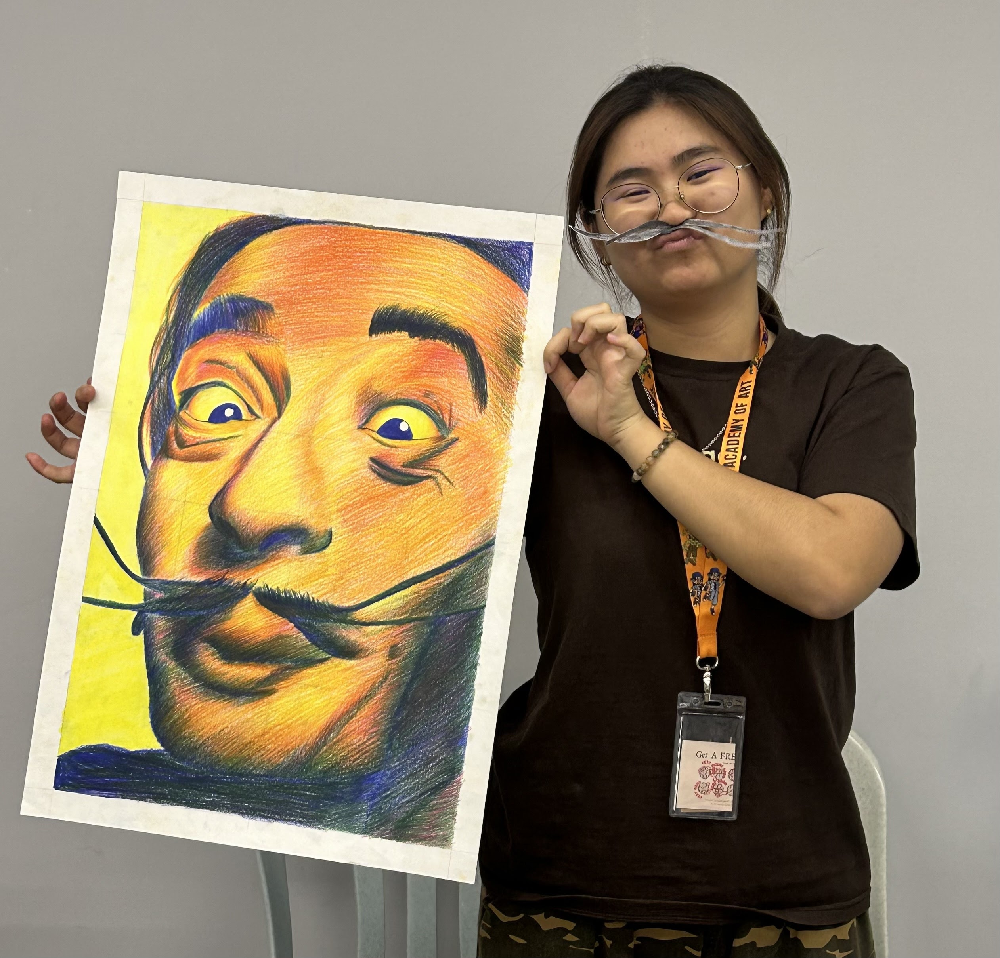

Hi, I'm Kelly! I'm currently 20 years old and studying at Dasein Academy of Art, pursuing a Diploma in
Digital Media
Design. I was born in Miri, Sarawak. My hobbies include playing pickleball, listening to music, and watching
dramas.
My favorite food is sushi, and I have a pet dog named AhBui.